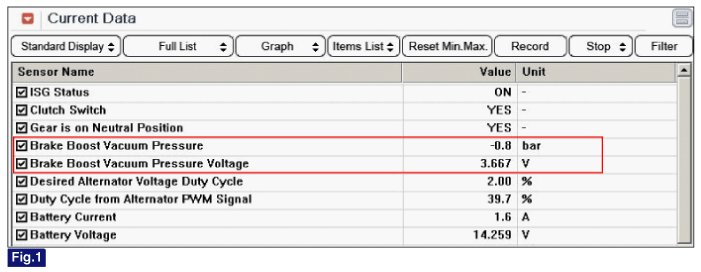
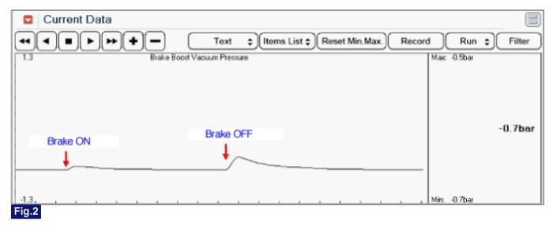

Brake Booster Vacuum Sensor: Service and Repair
Inspection
1. Check installation status of BBVPS and Vacuum hose or damage of vacuum hose.
2. Connect GDS to DLC (Data Link Cable).
3. Warm up the engine to normal operating temperature.
4. Monitor "BBVPS" parameter on GDS.


Fig.1) Idle Status
Fig.2) Brake pressure signal
NOTE:
With a brake partial vacuum that is too low, the ISG function also starts without activity on the part of the driver.
Insufficient brake partial vacuum can lead to safety risks during braking maneuvers, when rolling on an incline. To prevent this, the engine is started.
Removal
CAUTION:
Brake Booster Vacuum Pressure Sensor can not be replaced separately due to vacuum leak.
Therefore, the sensor must be replaced with an assembly with the brake booster.
Installation
CAUTION:
Brake Booster Vacuum Pressure Sensor can not be replaced separately due to vacuum leak.
Therefore, the sensor must be replaced with an assembly with the brake booster.